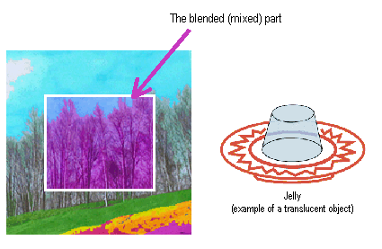

In N64, it is possible to display translucency. We call the effect of seeing through to the rear of a scene, as through a jelly or cellophane, the mixing (blending or translucent) process.

There are many methods you can use to implement the mixing process. Here are two that are representative:
By using this method when you create the mapping data, you can prepare the RGBA data to specify the alpha value for each texel. The alpha value shows the level of translucency -- more transparent or more opaque. For example, if the alpha value is 3.0, that means blend 30% for the already drawn pixel data when you draw the mapping data. The advantage of this method is that you can implement right down to the sprite (used in former games) because it sets the alpha value for each pixel.
This method multiplies the mixed coefficient when you draw a surface. It blends without applying the alpha value in the mapping data, so it sets the level of transparency for the entire object. It therefore cannot be used to specify the transparency in units of texel.
When you provide the blend, you need to be careful of the drawing order of the translucent surfaces. Be sure to draw the opaque surfaces first, and then draw the translucent surfaces from the rear forward.
Basically, the translucent surfaces are implemented by providing the translucent process to the picture that has already been drawn. Therefore, if you draw a translucent surfaces before drawing an opaque surfaces, the effect looks unnatural because there are no already drawn objects to be blended.
Also, if you start to draw the translucent surfaces from the front, the effect looks unnatural because the rear translucent surfaces are drawn on top of the front translucent surfaces. However, as a practical matter, this "unnatural look" is not very conspicuous, so it is not a very serious problem if you must draw from the front to the back.
Nintendo® Confidential
Copyright © 1999
Nintendo of America Inc. All Rights Reserved
Nintendo and N64 are registered trademarks of Nintendo
Last Updated March, 1999